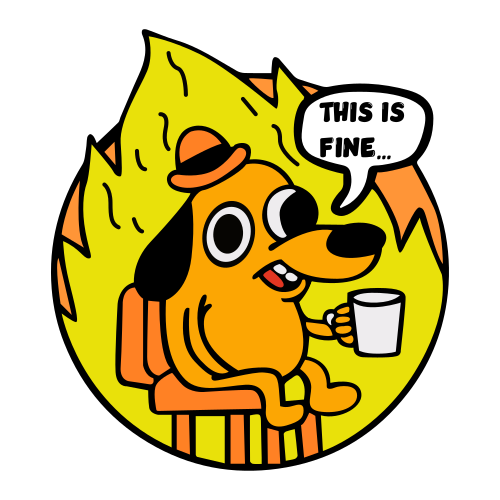

<nav class="bg-white border-b border-gray-200 fixed z-30 w-full">
    <div class="px-3 py-3 lg:px-5 lg:pl-3">
       <div class="flex items-center justify-between">
          <div class="flex items-center justify-start">
             <button id="toggleSidebarMobile" aria-expanded="true" aria-controls="sidebar" class="lg:hidden mr-2 text-gray-600 hover:text-gray-900 cursor-pointer p-2 hover:bg-gray-100 focus:bg-gray-100 focus:ring-2 focus:ring-gray-100 rounded">
                <svg id="toggleSidebarMobileHamburger" class="w-6 h-6" fill="currentColor" viewBox="0 0 20 20" xmlns="http://www.w3.org/2000/svg">
                   <path fill-rule="evenodd" d="M3 5a1 1 0 011-1h12a1 1 0 110 2H4a1 1 0 01-1-1zM3 10a1 1 0 011-1h6a1 1 0 110 2H4a1 1 0 01-1-1zM3 15a1 1 0 011-1h12a1 1 0 110 2H4a1 1 0 01-1-1z" clip-rule="evenodd"></path>
                </svg>
                <svg id="toggleSidebarMobileClose" class="w-6 h-6 hidden" fill="currentColor" viewBox="0 0 20 20" xmlns="http://www.w3.org/2000/svg">
                   <path fill-rule="evenodd" d="M4.293 4.293a1 1 0 011.414 0L10 8.586l4.293-4.293a1 1 0 111.414 1.414L11.414 10l4.293 4.293a1 1 0 01-1.414 1.414L10 11.414l-4.293 4.293a1 1 0 01-1.414-1.414L8.586 10 4.293 5.707a1 1 0 010-1.414z" clip-rule="evenodd"></path>
                </svg>
             </button>
             
             <a href="#" class="text-xl font-bold flex items-center lg:ml-2.5">
             
             <span class="self-center whitespace-nowrap">Tizo</span>
             </a>
          </div>
          <div class="flex items-center">
             
             <a href="#" class=" ml-5 text-white bg-red-600 hover:bg-red-700 focus:ring-4 focus:ring-red-200 font-medium rounded-lg text-sm px-5 py-2.5 text-center items-center mr-3">
                Logout
             </a>
          </div>
       </div>
    </div>
 </nav>
 <div class="flex overflow-hidden bg-white pt-16">
    <aside id="sidebar" class="fixed hidden z-20 h-full top-0 left-0 pt-16 lg:flex flex-shrink-0 flex-col w-64 transition-width duration-75" aria-label="Sidebar">
       <div class="relative flex-1 flex flex-col min-h-0 border-r border-gray-200 bg-white pt-0">
          <div class="flex-1 flex flex-col pt-5 pb-4 overflow-y-auto">
             <div class="flex-1 px-3 bg-white divide-y space-y-1">
                <ul class="space-y-2 pb-2">
                   
                   <li>
                    <a href="#" class="text-base text-gray-900 font-normal rounded-lg hover:bg-gray-100 flex items-center p-2 group ">
                       <svg class="w-6 h-6 text-gray-500 flex-shrink-0 group-hover:text-gray-900 transition duration-75" fill="currentColor" viewBox="0 0 20 20" xmlns="http://www.w3.org/2000/svg">
                          <path fill-rule="evenodd" d="M10 2a4 4 0 00-4 4v1H5a1 1 0 00-.994.89l-1 9A1 1 0 004 18h12a1 1 0 00.994-1.11l-1-9A1 1 0 0015 7h-1V6a4 4 0 00-4-4zm2 5V6a2 2 0 10-4 0v1h4zm-6 3a1 1 0 112 0 1 1 0 01-2 0zm7-1a1 1 0 100 2 1 1 0 000-2z" clip-rule="evenodd"></path>
                       </svg>
                       <span class="ml-3 flex-1 whitespace-nowrap">Products</span>
                    </a>
                   </li>
    
                  <li>
                    <a href="#" class="text-base text-gray-900 font-normal rounded-lg hover:bg-gray-100 flex items-center p-2 group ">
                        <svg class="w-6 h-6 text-gray-500 flex-shrink-0 group-hover:text-gray-900 transition duration-75" fill="currentColor" viewBox="0 0 20 20" xmlns="http://www.w3.org/2000/svg">
                            <path d="M7 3a1 1 0 000 2h6a1 1 0 100-2H7zM4 7a1 1 0 011-1h10a1 1 0 110 2H5a1 1 0 01-1-1zM2 11a2 2 0 012-2h12a2 2 0 012 2v4a2 2 0 01-2 2H4a2 2 0 01-2-2v-4z"></path>
                        </svg>
                       <span class="ml-3 flex-1 whitespace-nowrap">Category</span>
                    </a>
                  </li>

                  <li>
                    <a href="#" class="text-base text-gray-900 font-normal rounded-lg hover:bg-gray-100 flex items-center p-2 group ">
                        <svg class="w-6 h-6 text-gray-500 flex-shrink-0 group-hover:text-gray-900 transition duration-75" fill="currentColor" viewBox="0 0 20 20" xmlns="http://www.w3.org/2000/svg">
                           <path fill-rule="evenodd" d="M10 9a3 3 0 100-6 3 3 0 000 6zm-7 9a7 7 0 1114 0H3z" clip-rule="evenodd"></path>
                        </svg>
                        <span class="ml-3 flex-1 whitespace-nowrap">Users</span>
                    </a>
                  </li>

                </ul>
             </div>
          </div>
       </div>
    </aside>
    <div class="bg-gray-900 opacity-50 hidden fixed inset-0 z-10" id="sidebarBackdrop"></div>
    <div id="main-content" class="h-full w-full bg-gray-50 relative overflow-y-auto lg:ml-64">
       <main>
          <div class="pt-6 px-4">
            
            <app-product></app-product>

            
          </div>
       </main>
    </div>
 </div>